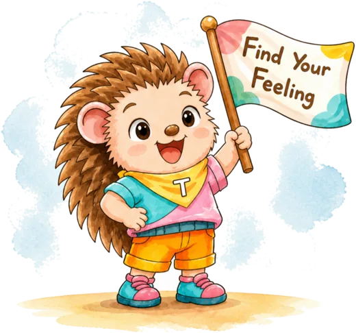

Tanya TEMU
Teman ngobrol AI tentang perasaan, stres, dan trauma.
Sebelum ngobrol: TEMU adalah AI, bukan psikolog, dan tidak bisa mendiagnosis. Jangan tulis nama lengkap, alamat, atau data pribadi lain, karena pesanmu diproses oleh layanan AI (Google Gemini). Kalau kamu dalam bahaya, langsung hubungi 112 atau Pusat Bantuan.